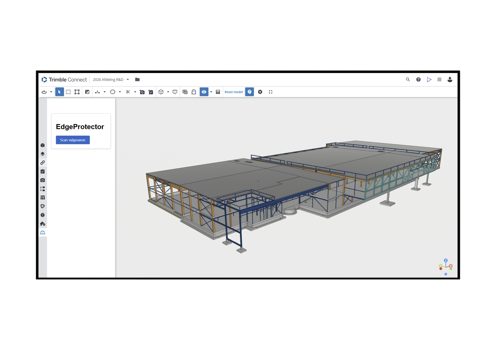
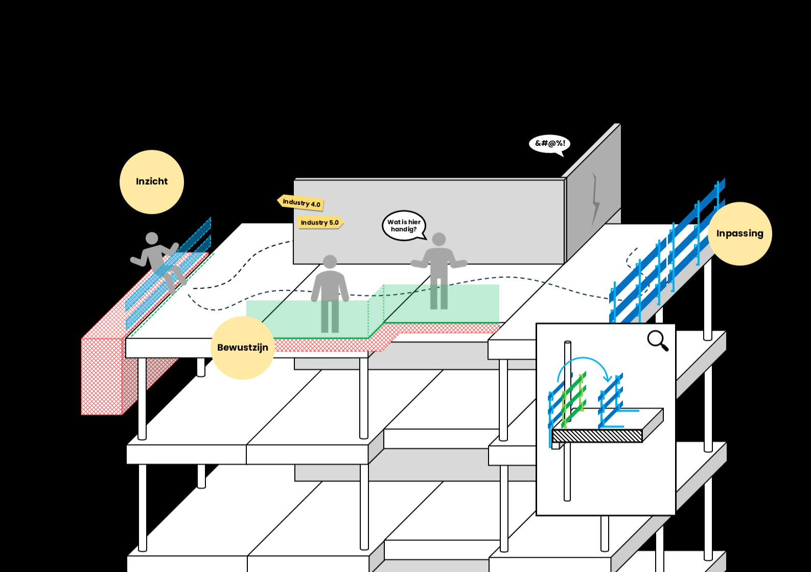
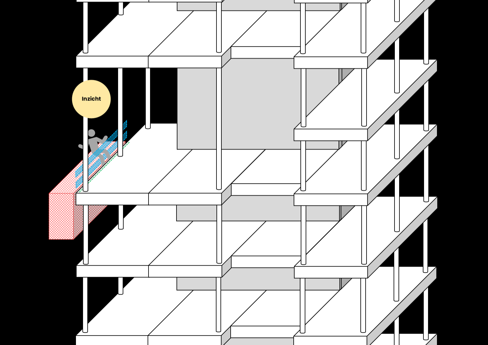
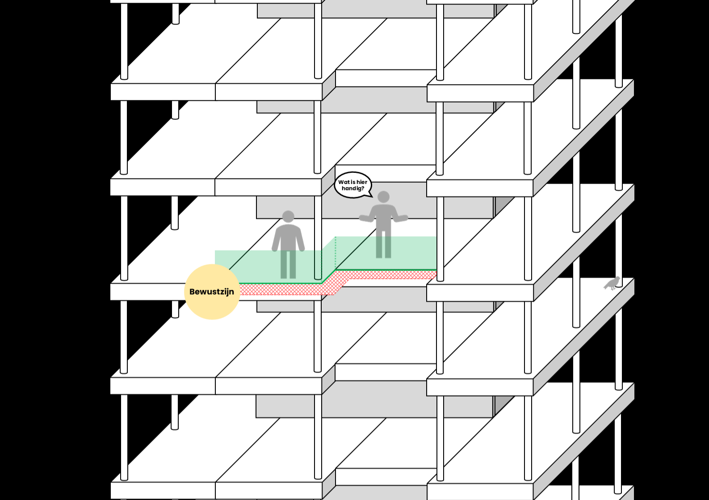
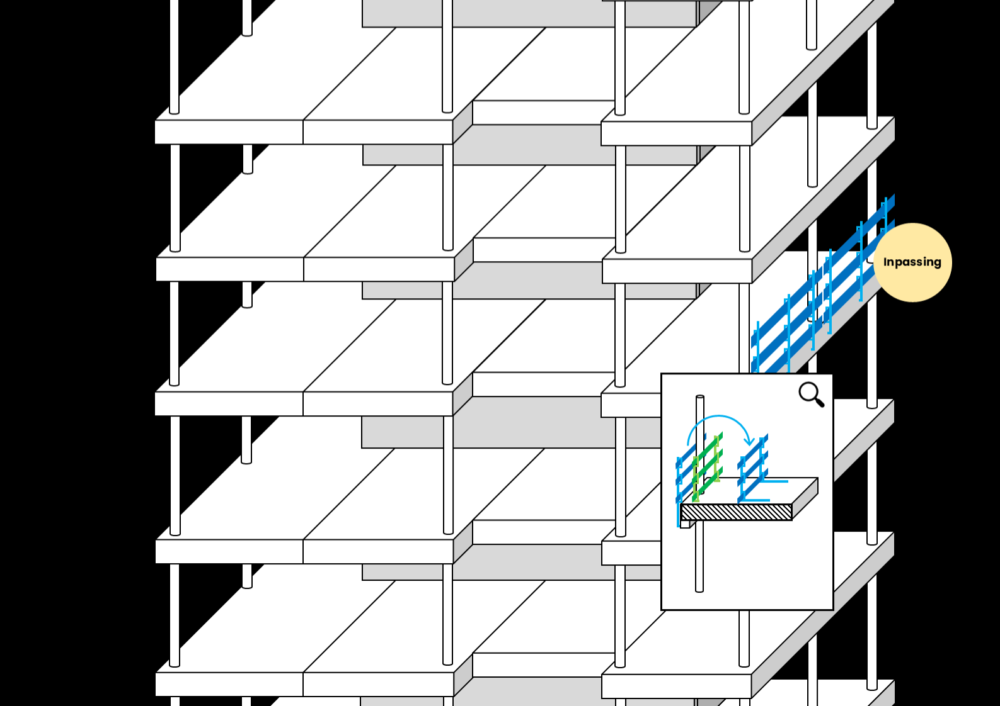

Scan randvalgevaren direct in IFC-modellen en maak veiligheid onderdeel van de voorbereiding.

Randen behoren tot de grootste valrisico’s op bouwplaatsen. Toch worden ze zelden al inzichtelijk gemaakt in BIM.
Markeert valgevaarzones automatisch
LEEG
EdgeProtector ondersteunt de Industry 5.0 visie waarin digitale analyse en menselijke expertise samen zorgen voor betere veiligheidsbeslissingen in een vroeg stadium.
Een extensie binnen Trimble, analyseert automatisch waar zich valgevaren bevinden binnen een project. Dit begint bij het eerste 3d-model dat bij aanbesteding beschikbaar is tot aan het UO-model. Uit deze analyse stroomt de volgende informatie: percentage randen met valgevaar, benodigde aantal m1 randbeveiliging en een risico indicatie (per fase).
Wanneer de randen met valgevaar in kaart zijn gebracht, worden deze gevisualiseerd in het 3d-model (IFC), zodat er een praatplaatje ontstaat. Doordat gevaren zichtbaar worden, ontstaat er een gespreksonderwerp binnen het projectteam. Deze stap creëert bewustzijn en bewustzijn leidt tot veiligheid.
In het samenwerkingsverband van het projectteam, kunnen project specifieke afwegingen worden gemaakt over de beste optie voor randbeveiliging. Deze keuze kan vervolgens als digital-twin worden toegevoegd aan het model en planning, waardoor het inzicht in randbeveiliging optimaal wordt voorbereid.




Open een IFC-model
Start EdgeProtector scan
Bekijk direct gemarkeerde risicogebieden
BIM
Aannemers